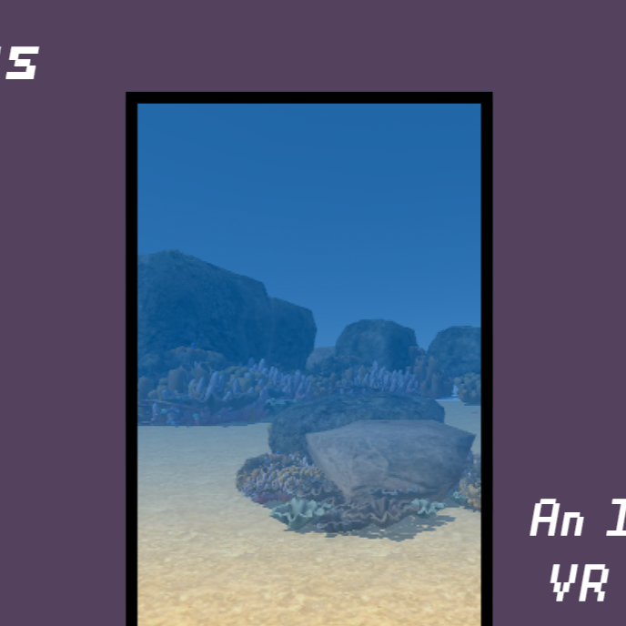
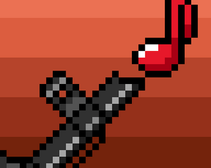
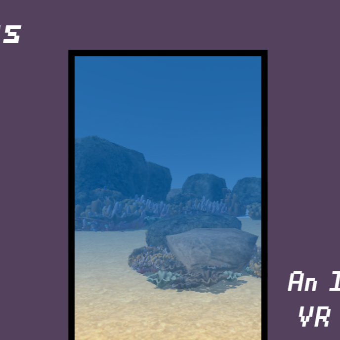
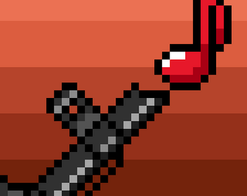
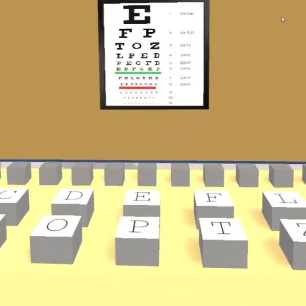
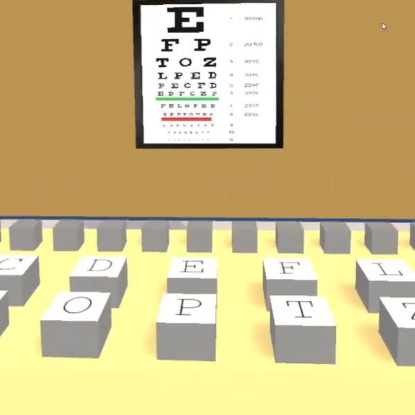

 


My name is Derrick Adams and I am a Data Analyst at Cox Automotive focusing on supporting software and AI applications. I graduated from the Georgia Institute of Technology in May of 2024 with a degree in Computational Media concentrating in computer intelligence and game design. I seek to leverage my product experience, design knowledge, and development skills to create dynamic digital experiences that span mediums. My portfolio includes work in web, XR, and UI design, as well as software and game development. My past professional experience includes working as a Product Manager at Cox Entperises, a UI/UX designer at Cox Communications, and publishing my own games to the Steam marketplace under the banner of Gear Shift Studios. My goal is to work in the game development industry focusing on gameplay design and user experience.
Blade and Burden is a rogue lite dungeon crawler built in Godot. I was the lead designer and developer responsible for all gameplay systems, user experience, and visuals.
Doorways to the Future is a VR experience developed in Unity that allows users to explore different futures that could await the Great Barrier Reef based on the effects of climate change.
I was responsible for implementing the VR controller, player movement, object interactions, and the doorway transport system.
Learn More at Doorways to the Future's websiteBullet Band is a bullet-hell rhythm game where you play as Dip, a young concert goer who is tricked into attending the world's deadliest concert.
I implemented an adaptive combat system that used inputs such as song length, BPM, and time signature to ensure movements and projectiles would sync to any song provided. I also created the environment and character art.
Stimuli is a Sci-Fi Action Platformer built in Game Maker: Studio. I solo developed the project, being responsible for everything from game design, to technical implementation, to marketing.
VATS, or the the Virtual Appointments and Testing suite is a VR program developed in Unity meant to help individuals talke to their doctorss and run basic physical tests without needing to go into the office. VATS was developed for HackGT 2020. I created all art and assets, as well as devleoped the different testing scenarios.

This project focuses on determining whether a team's runs scored per game and runs allowed per game are a reliable predictor of a team's chances of making the playoffs. After feature selection and different applications of supervised and unsupervisred learning, two algorithms were determined as the most accurate: Logistic Regression and XG Boost. Ultimately, we were 75% accurate on predicting MLB playoff teams in 2023 and we successfully predicted the world series champion.
Visit Project Site to Learn MoreA collection of concept art, UI/UX designs, 3D models, and animations.